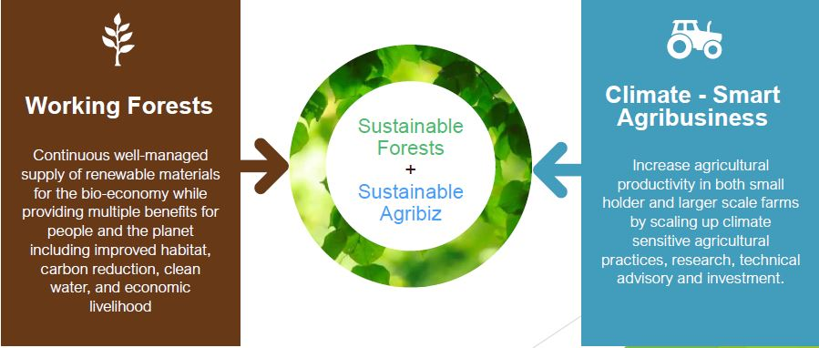

We are an agri-business consulting firm based in Nairobi
Munda is an agri-business consulting firm based in Nairobi We specialize in unlocking sustainable returns for all players across the agro-forestry value chain at radicallyfast turn around time. In 2020, we started Munda to overturn the disparate, outdated agro-forestry models of old. Empowered by our incubation into the Kenya Climate Innovation Centre (KCIC) in its firstCommercial Forestry cohort, our unique aggregator model sets us apart from similar offers currently available in the market.
EXPLORE NOWOur working pillars
Our collaborative model

Our Co-founders
Abdul, Co-founder, CEO
Abdulaziz Gakuria took an entrepreneurial bend to his life,
and has cut his mettle in the “school of hard Knocks” in the city of Nairobi.
Abdulazizhad been harvesting from government forests,
through tenders awarded by Kenya Forest Services.
His exposure to Kenya’s forestry industry was particularly insightful
having harvested timber and poles in Kenyan forests the length and breadth of the country.
In fact among the last major engagement with the government is when he was awarded the bush clearing contract
in Mivumoniarea of Kwale precedent to Base Titanium commencing the Dam construction and Titanium mining thereon
Paul, Co-founder, Director
Paul is an Entrepreneur and Business Development,
ExternalAffairs, and Public Stakeholder Engagement Consultant in African Markets.
He has extensive experience in both Public and Private
SectorProjects namely in Distribution and Marketing within Commercial FMCG,
Urban And Physical Planning Projects,National and Physical Addressing Systems,
Strategic Planning, and Entrepreneurship Projects.
Paul has worked and lived in Uganda, Tanzania, Madagascar, Ghana, Nigeria, and Kenya.
He serves as a director in several local firms.